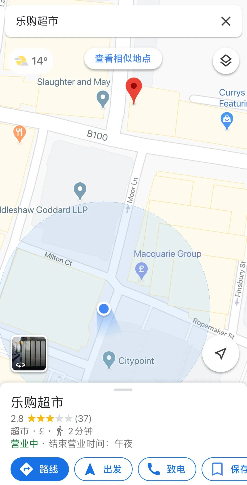

只能上网课的日子，大家都急了丨人间
原文链接 备份链接 看到老师发在班级群里别人家小孩听网课认真做的笔记，自己家的熊孩子却边听网课边睡觉，笔都不拿出来，妈妈们立刻炸了毛。火势再蔓延到孩子爸爸身上，爷爷奶奶也赶来劝，结果就是一场又一场的家庭混战。 配图 |《学区房72小时》 …

今天是3月17日，月相为39%的下弦月。
It is March 17 with a 39 percent of Last Quarter.
距离新月还有 7 天。
There are 7 days until New Moon.
文 || 白清扬
_好吧，是我自己。
_
是我自己要来伦敦的。
但是这首歌很提神醒脑。
炸一炸吧！
《是谁把我带到了这里》，谢天笑与冷血动物。
一
今天收到了导师的邮件，说如果我们对于前往学校感到为难，明天的讨论大可取消。可算是有了台阶，我也就顺势跟了下来：我明天不去了，我会把问题通过邮件发给您。
明天的讨论是我近期唯一的出行计划。从上周后半段开始，我就对这个安排感到头疼。如今取消了，我就彻底踏实了。但是问题并没有因此消失。我的冰箱逐渐变空，虽然蔬菜、鸡蛋和挂面还可以通过外卖软件上的中超买到，但是消毒湿巾、厨房用纸、卫生纸等等我却不得不亲自去一趟超市。伦敦原本是有很发达的电商系统的，今天却听朋友说，最近的送货日期已经排到了四月份。
二
我家楼下有一家规模不大的Tesco。这家店其实离我家非常近，与我所在的街道就差一个街区，大概三百米不到的样子。而且，我住在伦敦金融城，这是一个晚上七点以后连孤魂野鬼都不会出没的地方：一六六六年伦敦大火以后，这里就逐渐成为了大英帝国称霸世界的金融中心，它的地位注定了不可能有人在这里生老病死。人们白天带着苦闷来到这里，又在傍晚骂着街离开这里。在这样一个地方，这家Tesco却坚持每天开到午夜十二点。将至深夜，戴好口罩、穿好羽绒服再把帽子戴上，把降噪耳机塞进耳朵，像特工执行任务一样去采购一趟其实并不会有太多问题。

△ 我和超市的距离。
但少出门总归是好的。还没有到弹尽粮绝的地步，不想以身涉险。非常阶段，三百米都仿佛三千公里一样漫长。口罩就是我去超市时使用的护照。
三
我不知道国内的网课怎样进行，那个logo酷似蝙蝠的软件我也无缘使用。据说大家特别喜欢，纷纷前往苹果商店给出发自肺腑的一星。在伦敦，我们的网课要随意的多。今天以前，我最后一次上课是……让我查一下日历。我真的忘记了。是二月十四日。居然是二月十四日！？
老实说，几秒钟以前，在我看清楚日历上的日期时，我以为我上一次上课是二月二十几号。我并没有感觉我已经整整一个月还余两天没有上课了。无外乎好多人真诚地问我：“你是不是不上学啊？”可是我怎么一点儿都没觉得自己轻松呢？
老师发来一个链接，点进去之后是一个由谷歌支持的网络会议系统。发现可以同时关闭摄像头和话筒以后，我就让老师自顾自地讲课，走到灶台做早饭了。在教室里上课时，我通常会很积极地参加讨论，即使前一天没有做足准备，读够需要用到的书。但既然是上网课，我就彻底放飞自我了。

△ David在教室里，台下还坐了几个同学……魔幻“网课”。
早饭煮了一锅没有红油的红油抄手。虽然速冻抄手的袋子里送了一包红油，但我犯不着早上就和肠胃过不去。酱油和香油取而代之。老师一边讲课，我一边把八个抄手吃了个底朝天，连汤都没剩一口。吃饱喝足，我干脆把老师静音，自己赶起论文来。差不多到了下课的时间，我切去了网课的画面，打开声音，正好听见老师说：“Thank you very much, take care, bye.”我毕竟是一个听话的学生，所以我把页面关掉了。
想来今天的网课最神奇的一点是，老师是在我们往常上课的教室给我们直播网课的。更诡异的是，教室里还有前往现场听课的学生。我们学校将这周赋予了一个雅号，叫“transition week”，过渡周。然而疫情已经如此严重。如果终究会有一定规模的师生来到这个几百年前是教堂的密闭砖石大楼里上课，那么网课还有什么意义呢？
四
下午写论文时发现，对面的写字楼黑了一大片。我房间的正对面可以看到不同楼层几个企业高管的办公室。至于为什么我如此笃定是高管，是因为这些房间实在豪华，而且每一间都只有一个人办公。平日里，这些房间彻夜灯火通明；每一个办公桌上都有三、四台不同大小的电脑屏幕闪亮着；想必手机与iPad的屏幕我还没有计算在内。

△ 往日里人满为患的写字楼现在也基本空了。
三周以前的周六，朋友们到我家里吃饭聊天。从晚上八点开始，我们就注意到，对面写字楼的一间办公室里，有一个加班的高管独自支撑着整栋大楼的光明。他面对四台电脑，每一台的光明闪烁着不同的颜色。卡斯的那位朋友走到窗前，仔细看了看，说：“彭博的界面。”走回饭桌，她又补充了一句，“周六晚上八点还在加班，挣多少钱我都不干。”结果，谁能想到，当朋友们在凌晨两点离开我家时，对面的那位朋友还在加班。
今天看到他的办公室空无一人，我心下暗想，不知道在这个美股反复熔断，特朗普已经在推特上祈求上帝的日子里，他在家里办公需不需要彻夜加班。
五
今天没喝花茶，泡了杯西湖龙井。忘记点蜡烛了，这就去点上。

△ 《纽约客》3月9号的封面：两眼一闭，大嘴一喷（其实都是故意的，因此也更可恶），这就是当世第一大国的现任总统。
睡前，我看到了特朗普的推特。我转过头，看了看床头柜上静静燃烧着的蜡烛，心想，就当为他即将死亡的政治生涯烧上一炷香吧。

往期英国日记
3月15日：我向外卖包装袋上喷了三次酒精喷雾（白清扬）
3月14日：我决定记录未来每一个无聊的日子（白清扬）
白清扬往期文章
散文 || 嫁给怒放的青春
杂文 || 肖战极端粉丝做错了三件事
批评/杂文 || 中华文明璀璨的诗歌文化是指引我们的唯一向导
杂文 || 让我们的声音，成为推动历史前进的声音
抗疫特辑 || 不要让造谣与攻击成为群众唯一的权力
责任编辑、排版：白清扬。
封面图、首图、尾图：唐颂。

长按二维码向我转账
受苹果公司新规定影响，微信 iOS 版的赞赏功能被关闭，可通过二维码转账支持公众号。
原文链接 备份链接 看到老师发在班级群里别人家小孩听网课认真做的笔记，自己家的熊孩子却边听网课边睡觉，笔都不拿出来，妈妈们立刻炸了毛。火势再蔓延到孩子爸爸身上，爷爷奶奶也赶来劝，结果就是一场又一场的家庭混战。 配图 |《学区房72小时》 …
原文链接 备份链接 “有一次我突击去检查孩子的网课情况，发现她网课是在播放，但是电脑桌面当前窗口显示的却是她的QQ群，原来一群同学正聊得欢。” 记者|王晓珊 编辑| 盛倩玉 小豆 实习生| 甘笠男 刘苗苗 龚纾绮 “咋出来的不是云课堂？难 …
原文链接 备份链接 本文是协作者在“农民工抗疫救援行动”中，针对困境农民工家庭开展的个案访谈之一，旨在快速识别疫情中的脆弱人群及其需求，为疫情防控和救援工作提供参考，我们整理出来与你分享。 疫情下的深呼吸 ——困境农民工家庭个案实录（十 …
原文链接 备份链接 今天是3月16日，月相为49%的下弦月。 It is March 16 with a 49 percent of Last Quarter. 距离新月还有 8 天。 There are 8 days until New …
原文链接 备份链接 今天是3月15日，月相为60%的下弦月。 It is March 15 with a 60 percent of Last Quarter. 距离新月还有 9 天。 There are 9 days until New …